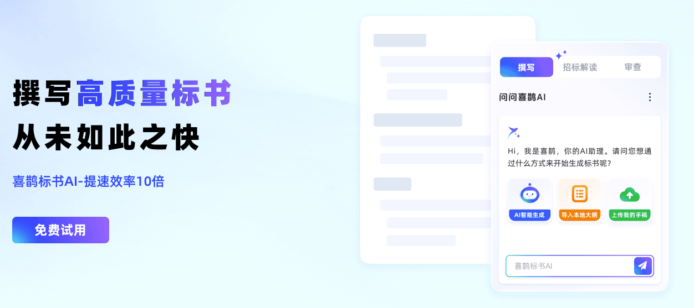

深度解析招标文件
识别项目概况、资格条件、评分标准、废标条款、强制响应和商务资料清单，为后续编标建立清晰依据。
AI BID WRITING PLATFORM
喜鹊标书AI围绕读标、生成、编辑、审查和资料复用，帮助投标团队把高重复、高风险的编标工作变得更有依据、更可控。

CAPABILITIES
从文件理解开始，到正文生成和交付前检查，喜鹊标书AI将投标工作中的关键节点集中到一个工作台。
识别项目概况、资格条件、评分标准、废标条款、强制响应和商务资料清单，为后续编标建立清晰依据。
先生成大纲，人工核对后再按章节生成正文，支持完整投标方案和单章节专项内容。
结合工程量清单辅助生成施工组织方案、工程附表和施工进度横道图。
通过知识库、产品库、图片库和资信库沉淀历史方案、产品参数、企业资料与真实图片。
检查资格条件、响应性条款、格式和签章等风险，支持查重、AI模拟评分与风险报告导出。结果仅用于辅助判断，仍需人工审核。
查看产品能力 ↗WORKFLOW
FAQ
平台支持完整投标方案生成、技术方案、商务资料整理和单章节专项内容。企业资质、人员、业绩、参数和承诺等事实信息需要提前维护并人工核验。
可以。用户可编辑目录和正文，对指定章节进行扩写、精简、改写或补充，并在下载前选择排版、格式和编号。
同一招标文件的评分点、技术参数和格式要求相同，基础响应结构可能接近。平台支持相似度调整、人工调整大纲、企业资料引用和图文配置，最终文件仍需结合项目实际人工审核。
READY TO START